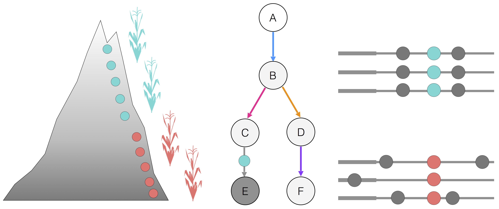

We are broadly interested in understanding the metabolic and morphological mechanisms that plants have developed to adapt to soils with low nutrient availability. See below the major research interests of our lab.

The ancestor of maize, Balsas teosinte (Zea mays ssp. parviglumis), is native from low to mid elevation regions of southwest Mexico. A second subspecies, Chalco teosinte (Zea mays ssp. mexicana), is distributed in the cooler, drier highlands of central Mexico, over 1800 meters. Maize (Zea mays ssp. mays) was domesticated from parviglumis about 9,000 years ago in the Balsas valley. After domestication, maize colonized the Mexican highlands, possibly aided by significant introgression of adaptive variation from mexicana. After domestication, maize also move south an reached South America. There, a second, independent event of highland colonization ocurred in the Andes.
In both Mesoamerica and South America highlands, maize was exposed to higher levels of radiation, lower air pressure, temperature and precipitation; furthermore, owing to the volcanic nature of most of these highlands, maize had to adapt to Andosol soils, characterized by low bio-availability of phosphorus. Therefore, maize colonization of these highland areas represents a great model to study plant local adaptation and processes of convergence/divergence adaptatation to similar environments.
Plants growing in phosphorus limiting soils develop a series of metabolic strategies, including recyling of P containing compounds such as RNA and phospholipids. Phospholipids constitute around 1/3 of the available phosphorus in the plant and are the major component of membranes, specially in chloroplasts. In addition to their structural role, some of the most abundant phospholipids such as phosphatidylcholine also have interesting signaling functions and are involved in multiple regulatory processes associated with environmental stimuli. Plants challenged with low temperatures tend to increase the proportion of phospholipids in the composition of membranes with respect to other polar lipids such as galactolipids and sulfolipids, probably as a mechanism to modulate membrane fluidity. On the other hand, plants under phosphorus deficiency recycle phospholipids -to free up phosphate- and substitute them with galactolipids and sulfolipids. Therefore during the process of adaptation to Mexican highlands we hypothesize that maize glycerolipid metabolism was under a high selective pressure.
Using quantitative genetics analysis of glycerolipid metabolism of plants from a number of mapping populations grown in common garden experiments in highland and lowland conditions we are trying to identify loci involved in lipid remodeling in highland maize.
Please contact me if you would be interested in knowing more about possibilities to work on projects related with this line of research. We have currently identifie